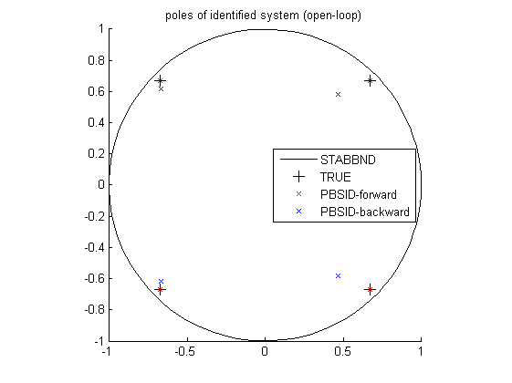

Contents
Example 1: Fourth-order LTI model with coloured process noise in closed loop
close all; clear; clc;
The fourth-order LTI model with coloured process noise
% state-space matrices A = [0.67 0.67 0 0; -0.67 0.67 0 0; 0 0 -0.67 -0.67; 0 0 0.67 -0.67]; B = [0.6598 -0.5256; 1.9698 0.4845; 4.3171 -0.4879; -2.6436 -0.3416]; K = [-0.6968 -0.1474; 0.1722 0.5646; 0.6484 -0.4660; -0.9400 0.1032]; C = [-0.3749 0.0751 -0.5225 0.5830; -0.8977 0.7543 0.1159 0.0982]; D = zeros(2); % open-loop system OL = ss(A,[B K],C,[D eye(2)],1); % closed-loop system F = diag([0.25 0.25]); CL = feedback(OL,F,[1 2],[1 2],-1);
Open-loop identification experiment
Simulation of the model in open loop
% input signals N = 4000; % number of samples t = (0:N-1)'; % time samples r = randn(N,2); % excitation signal % noise e = randn(N,2); % noise signal % simulation y0 = lsim(OL,[r zeros(N,2)],t); y = lsim(OL,[r e],t); disp('Signal to noise ratio (SNR) (open-loop)') snr(y,y0)
Signal to noise ratio (SNR) (open-loop) ans = 12.1059 7.2149
Identification of the model in open loop
% parameters n = 4; % order of system f = 10; % future window size p = 10; % past window size % PBSID-varx [S,X] = dordvarmax(r,y,f,p,'els',1e-6,'tikh','gcv'); figure, semilogy(S,'*'); x = dmodx(X,n); [Ai,Bi,Ci,Di,Ki] = dx2abcdk(x,r,y,f,p); % PBSID-varx backwards [S,X] = dordvarmax_back(r,y,f,p,1e-6,'tikh','gcv'); figure, semilogy(S,'*'); x = dmodx(X,n); [Av,Bv,Cv,Dv,Kv] = dx2abcdk_back(x,r,y,f,p);

Verification results
% verification using variance accounted for (VAF) (open loop) OLi = ss(Ai,Bi,Ci,Di,1); OLv = ss(Av,Bv,Cv,Dv,1); y = lsim(OL(1:2,1:2),r,t); yi = lsim(OLi,r,t); yv = lsim(OLv,r,t); disp('VAF with PBSID-forward (open loop)') vaf(y,yi) disp('VAF with PBSID-backward (open loop)') vaf(y,yv)
VAF with PBSID-forward (open loop) ans = 99.9732 99.9029 VAF with PBSID-backward (open loop) ans = 77.2797 36.7621
Identification results
% plot eigenvalues (open loop) figure hold on title('poles of identified system (open-loop)') [cx,cy] = pol2cart(linspace(0,2*pi),ones(1,100)); plot(cx,cy,'k'); plot(real(pole(OL)),imag(pole(OL)),'k+','LineWidth',0.1,'MarkerEdgeColor','k','MarkerFaceColor','k','MarkerSize',10); plot(real(eig(Ai)),imag(eig(Ai)),'rx'); plot(real(eig(Av)),imag(eig(Av)),'bx'); axis([-1 1 -1 1]); axis square legend('STABBND','TRUE','PBSID-forward','PBSID-backward','Location','East'); hold off % simulation figure, bodemag(OL(1:2,1:2),'k',OLi,'r',OLv,'b'); legend('TRUE','PBSID-forward','PBSID-backward','Location','Best');
Closed-loop identification experiment
Simulation of the model in closed loop
% simulation of closed loop e = 0.7.*e; y = lsim(CL,[r e],t); u = (r' - F*y')'; y0 = lsim(OL,[u zeros(N,2)],t); disp('Signal to noise ratio (SNR) (closed-loop)') snr(y,y0)
Signal to noise ratio (SNR) (closed-loop) ans = 10.4131 9.1208
Identification of the model in closed loop
% PBSID-varx (closed loop) [S,X] = dordvarmax(u,y,f,p,'els',1e-6,'tikh','gcv'); figure, semilogy(S,'*'); x = dmodx(X,n); [Ai,Bi,Ci,Di,Ki] = dx2abcdk(x,u,y,f,p); % PBSID-backwards (closed loop) [S,X] = dordvarmax_back(u,y,f,p,1e-6,'tikh','gcv'); figure, semilogy(S,'*'); x = dmodx(X,n); [Av,Bv,Cv,Dv,Kv] = dx2abcdk_back(x,u,y,f,p);
Verification results
% verification using variance accounted for (VAF) (closed loop) OLi = ss(Ai,Bi,Ci,Di,1); OLv = ss(Av,Bv,Cv,Dv,1); y = lsim(OL(1:2,1:2),u,t); yi = lsim(OLi,u,t); yv = lsim(OLv,u,t); disp('VAF with PBSID-forward (closed loop)') vaf(y,yi) disp('VAF with PBSID-backward (closed loop)') vaf(y,yv)
VAF with PBSID-forward (closed loop) ans = 99.5900 99.0921 VAF with PBSID-backward (closed loop) ans = 95.4362 85.6421
Identification results
% plot eigenvalues (closed loop) figure hold on title('poles of identified system (closed loop)') [cx,cy] = pol2cart(linspace(0,2*pi),ones(1,100)); plot(cx,cy,'k'); plot(real(pole(OL)),imag(pole(OL)),'k+','LineWidth',0.1,'MarkerEdgeColor','k','MarkerFaceColor','k','MarkerSize',10); plot(real(eig(Ai)),imag(eig(Ai)),'rx'); plot(real(eig(Av)),imag(eig(Av)),'bx'); axis([-1 1 -1 1]); axis square legend('STABBND','TRUE','PBSID-forward','PBSID-backward','Location','East'); hold off % simulation (closed loop) figure, bodemag(OL(1:2,1:2),'k',OLi,'r',OLv,'b'); legend('TRUE','PBSID-forward','PBSID-backward','Location','Best');